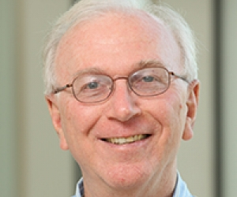

Towards Ambient Intelligence in Smart Healthcare
|
Abstract: Is the Internet of Healthcare Things (IOHT) hype or on the cusp of a healthcare revolution? We believe that wearables, in-situ sensors, machine learning, natural language processing, and the Internet are providing the technological backbone to achieve a true revolution in healthcare. Many challenges remain due to numerous factors including the complexities of human health and the realisms of deployment of the technology especially for the elderly. This talk describes our progress towards establishing an ambient intelligence for healthcare. Descriptions of several wearable and conversational based solutions that support taking medications, exercising, and quality of handwashing will be presented. Voice will be a major modality for this coming revolution. We also present a machine learning solution for detecting emotions via speech even at significant distances from a microphone and in realistic settings.
|

BP America Professor John A. Stankovic
Department of Computer Science
Director, Link Lab
University of Virginia |
Brief Bio: Professor John A. Stankovic is the BP America Professor in the Computer Science Department at the University of Virginia and Director of the Link Lab. He is a Fellow of both the IEEE and the ACM. He has been awarded an Honorary Doctorate from the University of York, U.K., for his work on real-time systems. He won the IEEE Real-Time Systems Technical Committee's Award for Outstanding Technical Contributions and Leadership. He also received the IEEE Technical Committee on Distributed Processing's Distinguished Achievement Award (inaugural winner). He has a Test of Time paper award, 8 Best Paper awards. Stankovic has an h-index of 121 and over 68,000 citations. In 2015 he was awarded the Univ. of Virginia Distinguished Scientist Award, in 2010 the School of Engineering’s Distinguished Faculty Award, and in 2020 the UVA Faculty Mentor Award. He also received a Distinguished Faculty Award from the University of Massachusetts. He has given more than 40 Keynote talks at conferences and many Distinguished Lectures at major Universities. His research interests are in real-time systems, wireless sensor networks, smart and connected health, smart cities, cyber physical systems, and the Internet of Things. Prof. Stankovic received his PhD from Brown University.
|
Towards Dynamic infastructures for healthcare - Edge Intelligence and Beyond
|
Abstract: As humans, things, software and AI continue to become the entangled fabric of distributed systems, systems engineers and researchers are facing novel challenges. In this talk, we analyze the role of IoT, Edge, Cloud, and Human-based Computing as well as AI in the co-evolution of distributed systems for the new decade. We identify challenges and discuss a roadmap that these new distributed systems have to address. We take a closer look at how a cyber-physical fabric will be complemented by AI operationalization to enable seamless end-to-end distributed systems.
|

Professor Schahram Dustdar
Head of the Research Division of Distributed Systems at the TU Wien,
Austria |
Brief Bio: Schahram Dustdar is Full Professor of Computer Science heading the Research Division of Distributed Systems at the TU Wien, Austria. From 1999 – 2007 he worked as the co-founder and chief scientist of Caramba Labs Software AG in Vienna (acquired by Engineering NetWorld AG), a venture capital co-funded software company focused on software for collaborative processes in teams. He is the co-founder and chief-scientist of Sinoaus.net, a research organization focusing on IoT and Edge based in China.
He is founding co-Editor-in-Chief of ACM Transactions on Internet of Things (ACM TIoT) as well as Editor-in-Chief of Computing (Springer). He is an Associate Editor of IEEE Transactions on Services Computing, IEEE Transactions on Cloud Computing, ACM Computing Surveys, ACM Transactions on the Web, and ACM Transactions on Internet Technology, as well as on the editorial board of IEEE Internet Computing and IEEE Computer. Dustdar is recipient of multiple awards: IEEE TCSVC Outstanding Leadership Award (2018), IEEE TCSC Award for Excellence in Scalable Computing (2019), ACM Distinguished Scientist (2009), ACM Distinguished Speaker (2021), IBM Faculty Award (2012). He is an elected member of the Academia Europaea: The Academy of Europe, where he is chairman of the Informatics Section, as well as an IEEE Fellow (2016) and an Asia-Pacific Artificial Intelligence Association (AAIA) Fellow (2021). He is a member of the Academy of the United Nations Sciences and Technology Organization (AUNSTO) (2021).
|
Principal Host
| |
Sudip Misra, PhD (Carleton U, Canada), FNAE (India), FNASc (India), FIETE (India), FIET (UK), FRSPH (UK)
ACM Distinguished Scientist
Alexander von Humboldt Fellow (Germany)
IEEE Communications Society Distinguished Lecturer
Professor & INAE Abdul Kalam Technology Innovation National Fellow
Department of Computer Science & Engineering
Indian Institute of Technology
Kharagpur-721302
West Bengal, India
Official Website: https://cse.iitkgp.ac.in/~smisra/
SWAN Group: https://cse.iitkgp.ac.in/~smisra/swan/
|
Co-Hosts
| |
Dr. Arijit Roy
India-France Raman-Charpak Fellow,
Former Senior Research Fellow, Council of Scientific & Industrial Research
Post-Doctoral Research Fellow
Parallel Computing and Optimisation Group
University of Luxembourg, Luxembourg
Website: www.arijitroy.info
|
 |
Dr. Ayan Mondal
Postdoctoral Research Engineer
Myriads Research Team
Univ Rennes, INRIA, CNRS, IRISA, France
Formerly: TCS Research Fellow (India), Visiting Researcher (INRIA, Rennes, France)
Website: https://ayanmondal.github.io/
|
Webinar Registration
All participants need to pre-register by September 10, 2021 by filling-up the following form: Registration Link
WebEx sign-in details will be shared with the registered participants using the email address provided in the registration form.
The Webinar flyer is available here.